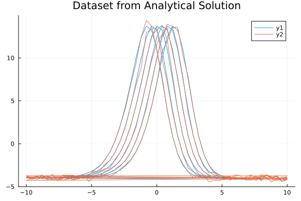
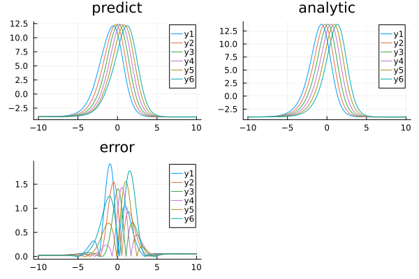

Using ahmc_bayesian_pinn_pde with the BayesianPINN Discretizer for the Kuramoto–Sivashinsky equation
Consider the Kuramoto–Sivashinsky equation:
\[∂_t u(x, t) + u(x, t) ∂_x u(x, t) + \alpha ∂^2_x u(x, t) + \beta ∂^3_x u(x, t) + \gamma ∂^4_x u(x, t) = 0 \, ,\]
where $\alpha = \gamma = 1$ and $\beta = 4$. The exact solution is:
\[u_e(x, t) = 11 + 15 \tanh \theta - 15 \tanh^2 \theta - 15 \tanh^3 \theta \, ,\]
where $\theta = t - x/2$ and with initial and boundary conditions:
\[\begin{align*} u( x, 0) &= u_e( x, 0) \, ,\\ u( 10, t) &= u_e( 10, t) \, ,\\ u(-10, t) &= u_e(-10, t) \, ,\\ ∂_x u( 10, t) &= ∂_x u_e( 10, t) \, ,\\ ∂_x u(-10, t) &= ∂_x u_e(-10, t) \, . \end{align*}\]
With Bayesian Physics-Informed Neural Networks, here is an example of using BayesianPINN discretization with ahmc_bayesian_pinn_pde :
using NeuralPDE, Lux, ModelingToolkit, LinearAlgebra, AdvancedHMC
using Distributions
import DomainSets: Interval
using IntervalSets: leftendpoint, rightendpoint
using Plots, MonteCarloMeasurements
@parameters x, t, α
@variables u(..)
Dt = Differential(t)
Dx = Differential(x)
Dx2 = Differential(x)^2
Dx3 = Differential(x)^3
Dx4 = Differential(x)^4
# α = 1
β = 4
γ = 1
eq = Dt(u(x, t)) + u(x, t) * Dx(u(x, t)) + α * Dx2(u(x, t)) + β * Dx3(u(x, t)) +
γ * Dx4(u(x, t)) ~ 0
u_analytic(x, t; z = -x / 2 + t) = 11 + 15 * tanh(z) - 15 * tanh(z)^2 - 15 * tanh(z)^3
du(x, t; z = -x / 2 + t) = 15 / 2 * (tanh(z) + 1) * (3 * tanh(z) - 1) * sech(z)^2
bcs = [u(x, 0) ~ u_analytic(x, 0),
u(-10, t) ~ u_analytic(-10, t),
u(10, t) ~ u_analytic(10, t),
Dx(u(-10, t)) ~ du(-10, t),
Dx(u(10, t)) ~ du(10, t)]
# Space and time domains
domains = [x ∈ Interval(-10.0, 10.0),
t ∈ Interval(0.0, 1.0)]
# Discretization
dx = 0.4;
dt = 0.2;
# Function to compute analytical solution at a specific point (x, t)
function u_analytic_point(x, t)
z = -x / 2 + t
return 11 + 15 * tanh(z) - 15 * tanh(z)^2 - 15 * tanh(z)^3
end
# Function to generate the dataset matrix
function generate_dataset_matrix(domains, dx, dt)
x_values = -10:dx:10
t_values = 0.0:dt:1.0
dataset = []
for t in t_values
for x in x_values
u_value = u_analytic_point(x, t)
push!(dataset, [u_value, x, t])
end
end
return vcat([data' for data in dataset]...)
end
datasetpde = [generate_dataset_matrix(domains, dx, dt)]
# noise to dataset
noisydataset = deepcopy(datasetpde)
noisydataset[1][:, 1] = noisydataset[1][:, 1] .+
randn(size(noisydataset[1][:, 1])) .* 5 / 100 .*
noisydataset[1][:, 1]306-element Vector{Float64}:
-3.8547088505045304
-4.174471279893687
-3.9465923944085786
-3.8710421563218183
-4.038614047861191
-3.5402858544403997
-4.311833522970818
-4.011100836561613
-3.82635451031083
-4.163147183313628
⋮
-4.070348890115186
-4.0817616313027925
-3.8118689424447125
-4.168627875514113
-3.616409892248406
-4.037770782301124
-4.342257732677362
-3.8685313707449764
-3.951647831909405Plotting dataset, added noise is set at 5%.
plot(datasetpde[1][:, 2], datasetpde[1][:, 1], title = "Dataset from Analytical Solution")
plot!(noisydataset[1][:, 2], noisydataset[1][:, 1])
# Neural network
chain = Chain(Dense(2, 8, tanh), Dense(8, 8, tanh), Dense(8, 1))
discretization = NeuralPDE.BayesianPINN([chain],
GridTraining([dx, dt]), param_estim = true, dataset = [noisydataset, nothing])
@named pde_system = PDESystem(eq,
bcs,
domains,
[x, t],
[u(x, t)],
[α],
initial_conditions = Dict([α => 0.5]))
sol1 = ahmc_bayesian_pinn_pde(pde_system,
discretization;
draw_samples = 100, Kernel = AdvancedHMC.NUTS(0.8),
bcstd = [0.2, 0.2, 0.2, 0.2, 0.2],
phystd = [1.0], l2std = [0.05], param = [Distributions.LogNormal(0.5, 2)],
priorsNNw = (0.0, 10.0),
saveats = [1 / 100.0, 1 / 100.0], progress = true)BPINNsolution{NeuralPDE.BPINNstats{MCMCChains.Chains{Float64, AxisArrays.AxisArray{Float64, 3, Base.ReshapedArray{Float64, 3, LinearAlgebra.Adjoint{Float64, Matrix{Float64}}, Tuple{Base.MultiplicativeInverses.SignedMultiplicativeInverse{Int64}}}, Tuple{AxisArrays.Axis{:iter, StepRange{Int64, Int64}}, AxisArrays.Axis{:var, Vector{Symbol}}, AxisArrays.Axis{:chain, UnitRange{Int64}}}}, Missing, @NamedTuple{parameters::Vector{Symbol}}, @NamedTuple{}}, Vector{Vector{Float64}}, Vector{NamedTuple}}, Vector{Vector{MonteCarloMeasurements.Particles{Float64, 33}}}, Vector{ComponentArrays.ComponentVector{MonteCarloMeasurements.Particles{Float64, 34}, Vector{MonteCarloMeasurements.Particles{Float64, 34}}, Tuple{ComponentArrays.Axis{(layer_1 = ViewAxis(1:24, Axis(weight = ViewAxis(1:16, ShapedAxis((8, 2))), bias = ViewAxis(17:24, Shaped1DAxis((8,))))), layer_2 = ViewAxis(25:96, Axis(weight = ViewAxis(1:64, ShapedAxis((8, 8))), bias = ViewAxis(65:72, Shaped1DAxis((8,))))), layer_3 = ViewAxis(97:105, Axis(weight = ViewAxis(1:8, ShapedAxis((1, 8))), bias = ViewAxis(9:9, Shaped1DAxis((1,))))))}}}}, Vector{MonteCarloMeasurements.Particles{Float64, 34}}, Vector{Matrix{Float64}}}(NeuralPDE.BPINNstats{MCMCChains.Chains{Float64, AxisArrays.AxisArray{Float64, 3, Base.ReshapedArray{Float64, 3, LinearAlgebra.Adjoint{Float64, Matrix{Float64}}, Tuple{Base.MultiplicativeInverses.SignedMultiplicativeInverse{Int64}}}, Tuple{AxisArrays.Axis{:iter, StepRange{Int64, Int64}}, AxisArrays.Axis{:var, Vector{Symbol}}, AxisArrays.Axis{:chain, UnitRange{Int64}}}}, Missing, @NamedTuple{parameters::Vector{Symbol}}, @NamedTuple{}}, Vector{Vector{Float64}}, Vector{NamedTuple}}(MCMC chain (100×106×1 reshape(adjoint(::Matrix{Float64}), 100, 106, 1) with eltype Float64), [[-1.8777368783957877, 1.881910511679464, 0.8198050803316802, 0.45493471025205934, 0.9334239777280058, -1.3666607069430108, 1.4972931121866566, 1.0261297170013883, 1.2910174201205473, 0.13396911171259857 … 0.03871721166883572, 0.04823880161726423, -0.13608383858252573, 0.2572552300720051, -0.19620788562397035, 0.39556417718040127, -0.2015823960320863, -0.11099823986068331, -0.025212588725983906, 0.5012616711143095], [-1.8777368783957877, 1.881910511679464, 0.8198050803316802, 0.45493471025205934, 0.9334239777280058, -1.3666607069430108, 1.4972931121866566, 1.0261297170013883, 1.2910174201205473, 0.13396911171259857 … 0.03871721166883572, 0.04823880161726423, -0.13608383858252573, 0.2572552300720051, -0.19620788562397035, 0.39556417718040127, -0.2015823960320863, -0.11099823986068331, -0.025212588725983906, 0.5012616711143095], [-1.8685281277519004, 1.8752541674163377, 0.8214677993690725, 0.4517195602893885, 0.9322707685610001, -1.3736898045687842, 1.4974425301892738, 1.0205962828002366, 1.2986081911773815, 0.1394165639595107 … 0.12773201371149898, 0.059291478928687004, -0.10354056612376883, 0.2502275622625174, -0.15711244753025236, 0.45512906004971604, -0.16901059234400206, -0.007836842703209196, -0.17814180139552926, 0.4995356744921482], [-1.8685281277519004, 1.8752541674163377, 0.8214677993690725, 0.4517195602893885, 0.9322707685610001, -1.3736898045687842, 1.4974425301892738, 1.0205962828002366, 1.2986081911773815, 0.1394165639595107 … 0.12773201371149898, 0.059291478928687004, -0.10354056612376883, 0.2502275622625174, -0.15711244753025236, 0.45512906004971604, -0.16901059234400206, -0.007836842703209196, -0.17814180139552926, 0.4995356744921482], [-1.8590405626492366, 1.8725795451820408, 0.8230212916856433, 0.4548948554154156, 0.9251603897621509, -1.3755566106552004, 1.4944793712513575, 1.0074505478826623, 1.3067113899158076, 0.14200473392662918 … 0.19661818862495756, 0.05366431794362625, -0.08493795069684085, 0.24500289472041034, -0.15821393062488415, 0.49673072468911383, -0.16872009620517683, 0.03884653667322079, -0.2792915612490791, 0.4999770651013823], [-1.8579683074728572, 1.8723134671352044, 0.8229780667508627, 0.45482449840371736, 0.9242135015145614, -1.3754466249089365, 1.4943626954263023, 1.006437103632179, 1.3072853732353567, 0.14192120630305363 … 0.19969164329093375, 0.05280830529225006, -0.0841350070170579, 0.24523406060968309, -0.15827930820108943, 0.4988629825534532, -0.16888986571257097, 0.04070027688528747, -0.28403305402840673, 0.5001130160061608], [-1.8571573574398599, 1.872482069591504, 0.8231969792359259, 0.45541015956934894, 0.9235675695244744, -1.3754995195393103, 1.4937749018001178, 1.0056316114107784, 1.3074959816620295, 0.1416638467628014 … 0.20561842980663178, 0.0526361913742063, -0.08350418602187137, 0.24549271251889665, -0.15794138114822429, 0.5021075244191922, -0.1694028204580353, 0.0438565195606003, -0.2909626647884075, 0.5007081448226199], [-1.857128876964379, 1.8724385505760692, 0.8232687354713324, 0.45533524506065887, 0.9234417080888013, -1.375412204541564, 1.4937133965914955, 1.0057988994769247, 1.3075975946375555, 0.14175701093291881 … 0.20588831584801562, 0.05258212638409751, -0.08337743428709082, 0.24561372447885926, -0.1580252190783261, 0.502296648146739, -0.16934393569577524, 0.044007632745201516, -0.291399226504408, 0.5007173952478013], [-1.8566076858828404, 1.8722493985255964, 0.8235191597020521, 0.45532052491230474, 0.9227664669118616, -1.375318519565742, 1.493780604462009, 1.0051030599645148, 1.308568266772726, 0.1418879221834189 … 0.21127914646651705, 0.05187211993035101, -0.08223646559487824, 0.24529569858243608, -0.15854426219665266, 0.5052677794901411, -0.17040560146615608, 0.04725740076482527, -0.29742896977794886, 0.5001208683261279], [-1.856458208779689, 1.872425376512499, 0.8230613617560044, 0.4556788888539084, 0.922576003272833, -1.375292855468322, 1.493761482191189, 1.0046325660172206, 1.309200025805055, 0.14186198650042126 … 0.21318107694895325, 0.05165336518570803, -0.08186083727391083, 0.24456400835366285, -0.1589065578988497, 0.5073202627231963, -0.1712221337421684, 0.048465579904722195, -0.29998436157969427, 0.5002059271697418] … [-0.8188083177932305, 1.828868734738642, 0.8820830203757772, 0.4119298520222321, 0.558211213370616, -1.1207921399360654, 1.123303792939718, 0.5357734768869009, 1.7579068421346762, 0.2562001919539455 … 3.8970653829974156, -0.8084277653723919, 0.37986132576354914, 0.11431309959502224, -2.1371978649369416, 3.7033516194317757, -2.78861244362009, 2.4863713931885196, 0.5192424839720076, 0.6855160426021434], [-0.8159627614099575, 1.8328980343574512, 0.883354258697969, 0.4147694046862213, 0.564098838450152, -1.1116770751726233, 1.1232392776738067, 0.5330262028371342, 1.7607184841443053, 0.2573816208624777 … 3.9116018380683593, -0.8121974936654593, 0.3800795407527861, 0.11378499902985142, -2.1326392484085503, 3.704834483382588, -2.800263109492643, 2.487121367834567, 0.5150173644321041, 0.6989511391526133], [-0.807513510072642, 1.8422515922260339, 0.8930160872134316, 0.4203576063595413, 0.5993528004242104, -1.0979599503622688, 1.1219223379878418, 0.5250684039436847, 1.7928210601541574, 0.26369910907923183 … 3.934884286494578, -0.8151285291864219, 0.3723428515359712, 0.08774741519014857, -2.154579625397343, 3.7175131499679326, -2.8199668004001106, 2.491490824419409, 0.49500766414755604, 0.757969277652871], [-0.8239805119111391, 1.7633328349857236, 0.8911216063076356, 0.4098683529292972, 0.5966356753036153, -1.109545253048009, 1.110950328547206, 0.4872545811771236, 1.854223053898724, 0.24399599510305411 … 4.127141225986803, -0.7761951850133778, 0.26271578501596304, 0.08005742316668613, -2.12198758640274, 3.8736230994411596, -2.8512214110454224, 2.409550840297788, 0.3879544272196745, 1.079774872023748], [-0.8171318429519047, 1.7058881324874948, 0.9001980729326484, 0.4061590268982692, 0.6121408810442046, -1.1014667966231084, 1.1225635747665503, 0.492653349776966, 1.8406426698134788, 0.24905358482169807 … 4.083599231544236, -0.73365917127912, 0.273383985673068, 0.05820632032143422, -2.1589668472521444, 3.851228411845163, -2.823597935348069, 2.4199762999989387, 0.43934145639919436, 0.9399271171018779], [-0.8871408233671185, 1.593913935791469, 0.814770017289468, 0.24968181000090445, 0.4333939618045688, -0.9579154060781808, 1.051949567845407, 0.483013102902107, 1.934603311762021, 0.028698744765170772 … 4.178977139695712, -0.7138382564056779, 0.38146178647014933, 0.13831930927884656, -2.1917333054201973, 3.9677890886481046, -2.713252479173752, 2.5861722339256543, 0.5574943969640187, 0.9459032209022717], [-0.8625965459860562, 1.5830856625144307, 0.8461020869263155, 0.2757798908219776, 0.4507944278609174, -0.9777706065033209, 1.056214406585535, 0.4970605890834058, 1.9014854005750457, 0.004734878230754844 … 4.111165189913891, -0.6737958301426163, 0.3639253735603341, 0.121594418775186, -2.2782471214191857, 3.9534846879581047, -2.6922101752321845, 2.6706499430125783, 0.49942157149100364, 0.9795980865520897], [-0.8868715509404993, 1.5935819713479795, 0.8046292986338721, 0.3317826412748359, 0.45865487044380515, -0.9887698678582273, 1.0706035764852155, 0.491455965804794, 1.8997835316524314, 0.029340439380650517 … 4.081445394041058, -0.629223709487383, 0.3358173446839628, 0.11182877222917866, -2.204002893922463, 3.9482281281673677, -2.6526434942984016, 2.820110378370379, 0.46995303480127787, 0.9575049579235367], [-0.8498001915254082, 1.5362863935149162, 0.8027524907581931, 0.28868499987279184, 0.4158640712009553, -0.9632853198289612, 1.0406563364568029, 0.49219141493917007, 1.8121043753571873, -0.0650739648186048 … 3.9929673043810596, -0.6951745015563728, 0.3762413273899301, 0.14838116896344242, -2.332799964600002, 4.113848146263039, -2.671097978478583, 2.822894299940255, 0.521512317895918, 0.9898186325121917], [-0.8493147138678776, 1.463951380288872, 0.7986386226477119, 0.3153629085004629, 0.4400135820790772, -0.9749059966137783, 1.0643425844064964, 0.4858037262277274, 1.807537977768946, 0.0006524365620972969 … 4.103505452701212, -0.5687152859373932, 0.3122703156637235, 0.19512479923678872, -2.3318540191211676, 4.123763446824933, -2.657924891600146, 2.8329697425530536, 0.5233463104201618, 0.9425021800855811]], NamedTuple[(n_steps = 10, is_accept = true, acceptance_rate = 0.9, log_density = -1.7995077713872567e6, hamiltonian_energy = 2.1023471027322025e6, hamiltonian_energy_error = -11998.224182735663, max_hamiltonian_energy_error = -51137.476524841506, tree_depth = 3, numerical_error = true, step_size = 0.00078125, nom_step_size = 0.00078125, is_adapt = true), (n_steps = 1, is_accept = true, acceptance_rate = 0.0, log_density = -1.7995077713872567e6, hamiltonian_energy = 1.7995640985588748e6, hamiltonian_energy_error = 0.0, max_hamiltonian_energy_error = 1.4897824828074765e11, tree_depth = 0, numerical_error = true, step_size = 0.009370282047151453, nom_step_size = 0.009370282047151453, is_adapt = true), (n_steps = 1, is_accept = true, acceptance_rate = 1.0, log_density = -1.7466961195509648e6, hamiltonian_energy = 1.7942504455596788e6, hamiltonian_energy_error = -5314.852931766072, max_hamiltonian_energy_error = -5314.852931766072, tree_depth = 1, numerical_error = false, step_size = 0.0015005162150842468, nom_step_size = 0.0015005162150842468, is_adapt = true), (n_steps = 2, is_accept = true, acceptance_rate = 3.8656972866088667e-306, log_density = -1.7466961195509648e6, hamiltonian_energy = 1.7467464701897055e6, hamiltonian_energy_error = 0.0, max_hamiltonian_energy_error = 66901.38466648338, tree_depth = 1, numerical_error = true, step_size = 0.002061385315440553, nom_step_size = 0.002061385315440553, is_adapt = true), (n_steps = 15, is_accept = true, acceptance_rate = 1.0, log_density = -1.7158558800374763e6, hamiltonian_energy = 1.746738118090144e6, hamiltonian_energy_error = -3.770049376413226, max_hamiltonian_energy_error = -4.088417628780007, tree_depth = 4, numerical_error = false, step_size = 0.0001904128443224969, nom_step_size = 0.0001904128443224969, is_adapt = true), (n_steps = 15, is_accept = true, acceptance_rate = 0.018810333165357185, log_density = -1.7143658863985655e6, hamiltonian_energy = 1.715896744331847e6, hamiltonian_energy_error = 1.2764386835042387, max_hamiltonian_energy_error = 517.406402169494, tree_depth = 4, numerical_error = false, step_size = 0.00029409825936989445, nom_step_size = 0.00029409825936989445, is_adapt = true), (n_steps = 31, is_accept = true, acceptance_rate = 0.9847838154191516, log_density = -1.711936072616756e6, hamiltonian_energy = 1.7144292313884564e6, hamiltonian_energy_error = 0.023860309273004532, max_hamiltonian_energy_error = 0.043784454464912415, tree_depth = 5, numerical_error = false, step_size = 2.4619450533571475e-5, nom_step_size = 2.4619450533571475e-5, is_adapt = true), (n_steps = 7, is_accept = true, acceptance_rate = 0.997123928474462, log_density = -1.7118098298907827e6, hamiltonian_energy = 1.7119903589195346e6, hamiltonian_energy_error = 0.00021340162493288517, max_hamiltonian_energy_error = 0.011141612892970443, tree_depth = 3, numerical_error = false, step_size = 3.977207343357377e-5, nom_step_size = 3.977207343357377e-5, is_adapt = true), (n_steps = 7, is_accept = true, acceptance_rate = 0.9538547729272866, log_density = -1.709641298381372e6, hamiltonian_energy = 1.711862969884315e6, hamiltonian_energy_error = 0.14336045179516077, max_hamiltonian_energy_error = 0.14336045179516077, tree_depth = 3, numerical_error = false, step_size = 7.02241159868033e-5, nom_step_size = 7.02241159868033e-5, is_adapt = true), (n_steps = 3, is_accept = true, acceptance_rate = 0.9199821832032585, log_density = -1.7087054203104363e6, hamiltonian_energy = 1.7097076219465733e6, hamiltonian_energy_error = 0.1800983294378966, max_hamiltonian_energy_error = 0.1800983294378966, tree_depth = 2, numerical_error = false, step_size = 0.00011158236058850936, nom_step_size = 0.00011158236058850936, is_adapt = true) … (n_steps = 63, is_accept = true, acceptance_rate = 0.9993381636406535, log_density = -4463.0910359494, hamiltonian_energy = 5245.91847357722, hamiltonian_energy_error = -0.28856147791248077, max_hamiltonian_energy_error = -0.36587528915788425, tree_depth = 6, numerical_error = false, step_size = 0.00014593271903500993, nom_step_size = 0.00014593271903500993, is_adapt = false), (n_steps = 127, is_accept = true, acceptance_rate = 0.9872435381613053, log_density = -4288.638102028704, hamiltonian_energy = 4515.867999476258, hamiltonian_energy_error = -0.0803266093480488, max_hamiltonian_energy_error = 0.1315482218287798, tree_depth = 7, numerical_error = false, step_size = 0.00014593271903500993, nom_step_size = 0.00014593271903500993, is_adapt = false), (n_steps = 127, is_accept = true, acceptance_rate = 0.975938588981999, log_density = -4033.1839491233495, hamiltonian_energy = 4341.586685418661, hamiltonian_energy_error = 0.04941812090874009, max_hamiltonian_energy_error = 0.10895484299544478, tree_depth = 7, numerical_error = false, step_size = 0.00014593271903500993, nom_step_size = 0.00014593271903500993, is_adapt = false), (n_steps = 511, is_accept = true, acceptance_rate = 0.9521639759330477, log_density = -3729.620821258268, hamiltonian_energy = 4101.721019859526, hamiltonian_energy_error = 0.0952769279392669, max_hamiltonian_energy_error = 0.20954251900730014, tree_depth = 9, numerical_error = false, step_size = 0.00014593271903500993, nom_step_size = 0.00014593271903500993, is_adapt = false), (n_steps = 1023, is_accept = true, acceptance_rate = 0.9939853525331908, log_density = -3630.5638682041426, hamiltonian_energy = 3776.1231911361556, hamiltonian_energy_error = -0.10886967699298111, max_hamiltonian_energy_error = -0.2579176775984706, tree_depth = 10, numerical_error = false, step_size = 0.00014593271903500993, nom_step_size = 0.00014593271903500993, is_adapt = false), (n_steps = 1023, is_accept = true, acceptance_rate = 0.9911331712235143, log_density = -3541.991458601211, hamiltonian_energy = 3675.1895014166107, hamiltonian_energy_error = -0.050839273571000376, max_hamiltonian_energy_error = -0.16112405610829228, tree_depth = 10, numerical_error = false, step_size = 0.00014593271903500993, nom_step_size = 0.00014593271903500993, is_adapt = false), (n_steps = 1023, is_accept = true, acceptance_rate = 0.984171184937809, log_density = -3531.145684689225, hamiltonian_energy = 3591.241435901476, hamiltonian_energy_error = -0.016309133526192454, max_hamiltonian_energy_error = -0.1063581580428945, tree_depth = 10, numerical_error = false, step_size = 0.00014593271903500993, nom_step_size = 0.00014593271903500993, is_adapt = false), (n_steps = 1023, is_accept = true, acceptance_rate = 0.9772834942460464, log_density = -3522.29568444538, hamiltonian_energy = 3579.6455613218814, hamiltonian_energy_error = -0.03664309556143053, max_hamiltonian_energy_error = -0.11383949815581218, tree_depth = 10, numerical_error = false, step_size = 0.00014593271903500993, nom_step_size = 0.00014593271903500993, is_adapt = false), (n_steps = 1023, is_accept = true, acceptance_rate = 0.944816762283152, log_density = -3519.4513124860428, hamiltonian_energy = 3575.0945324958593, hamiltonian_energy_error = 0.07058774035158422, max_hamiltonian_energy_error = 0.17114212686328756, tree_depth = 10, numerical_error = false, step_size = 0.00014593271903500993, nom_step_size = 0.00014593271903500993, is_adapt = false), (n_steps = 1023, is_accept = true, acceptance_rate = 0.9935831022018992, log_density = -3521.187731161295, hamiltonian_energy = 3574.119559180846, hamiltonian_energy_error = -0.08545524325245424, max_hamiltonian_energy_error = -0.1328167585634219, tree_depth = 10, numerical_error = false, step_size = 0.00014593271903500993, nom_step_size = 0.00014593271903500993, is_adapt = false)]), Vector{MonteCarloMeasurements.Particles{Float64, 33}}[[-4.02 ± 0.023, -4.02 ± 0.023, -4.02 ± 0.023, -4.02 ± 0.023, -4.02 ± 0.023, -4.02 ± 0.023, -4.02 ± 0.023, -4.02 ± 0.023, -4.02 ± 0.023, -4.02 ± 0.023 … -4.05 ± 0.046, -4.05 ± 0.046, -4.05 ± 0.046, -4.05 ± 0.046, -4.05 ± 0.046, -4.05 ± 0.046, -4.05 ± 0.046, -4.05 ± 0.046, -4.05 ± 0.046, -4.05 ± 0.046]], ComponentArrays.ComponentVector{MonteCarloMeasurements.Particles{Float64, 34}, Vector{MonteCarloMeasurements.Particles{Float64, 34}}, Tuple{ComponentArrays.Axis{(layer_1 = ViewAxis(1:24, Axis(weight = ViewAxis(1:16, ShapedAxis((8, 2))), bias = ViewAxis(17:24, Shaped1DAxis((8,))))), layer_2 = ViewAxis(25:96, Axis(weight = ViewAxis(1:64, ShapedAxis((8, 8))), bias = ViewAxis(65:72, Shaped1DAxis((8,))))), layer_3 = ViewAxis(97:105, Axis(weight = ViewAxis(1:8, ShapedAxis((1, 8))), bias = ViewAxis(9:9, Shaped1DAxis((1,))))))}}}[(layer_1 = (weight = MonteCarloMeasurements.Particles{Float64, 34}[-0.915 ± 0.078 1.69 ± 0.11; 1.82 ± 0.12 0.107 ± 0.084; … ; 1.15 ± 0.054 -1.69 ± 0.39; 0.519 ± 0.016 -1.29 ± 0.22], bias = MonteCarloMeasurements.Particles{Float64, 34}[0.451 ± 0.076, 0.411 ± 0.081, -0.634 ± 0.1, 0.136 ± 0.14, 0.556 ± 0.074, -0.433 ± 0.075, 0.355 ± 0.17, 1.19 ± 0.14]), layer_2 = (weight = MonteCarloMeasurements.Particles{Float64, 34}[0.798 ± 0.087 -0.0523 ± 0.055 … 1.12 ± 0.094 1.24 ± 0.17; 0.274 ± 0.14 0.396 ± 0.16 … 0.906 ± 0.13 0.415 ± 0.053; … ; -0.381 ± 0.04 -0.115 ± 0.08 … -0.474 ± 0.2 -1.36 ± 0.14; 0.507 ± 0.023 -0.805 ± 0.21 … -0.106 ± 0.08 0.849 ± 0.039], bias = MonteCarloMeasurements.Particles{Float64, 34}[-0.799 ± 0.055, -0.0244 ± 0.074, 0.206 ± 0.046, -0.0724 ± 0.1, -0.565 ± 0.04, -0.886 ± 0.1, 0.289 ± 0.07, -0.197 ± 0.02]), layer_3 = (weight = MonteCarloMeasurements.Particles{Float64, 34}[3.53 ± 0.4 -0.483 ± 0.24 … -2.41 ± 0.3 2.3 ± 0.25], bias = MonteCarloMeasurements.Particles{Float64, 34}[0.316 ± 0.17]))], MonteCarloMeasurements.Particles{Float64, 34}[0.659 ± 0.17], [[-10.0 -9.99 … 9.99 10.0; 0.0 0.0 … 1.0 1.0]])And some analysis:
phi = discretization.phi[1]
xs,
ts = [leftendpoint(d.domain):dx:rightendpoint(d.domain)
for (d, dx) in zip(domains, [dx / 10, dt])]
u_predict = [[first(pmean(phi([x, t], sol1.estimated_nn_params[1]))) for x in xs]
for t in ts]
u_real = [[u_analytic(x, t) for x in xs] for t in ts]
diff_u = [[abs(u_analytic(x, t) - first(pmean(phi([x, t], sol1.estimated_nn_params[1]))))
for x in xs]
for t in ts]
p1 = plot(xs, u_predict, title = "predict")
p2 = plot(xs, u_real, title = "analytic")
p3 = plot(xs, diff_u, title = "error")
plot(p1, p2, p3)